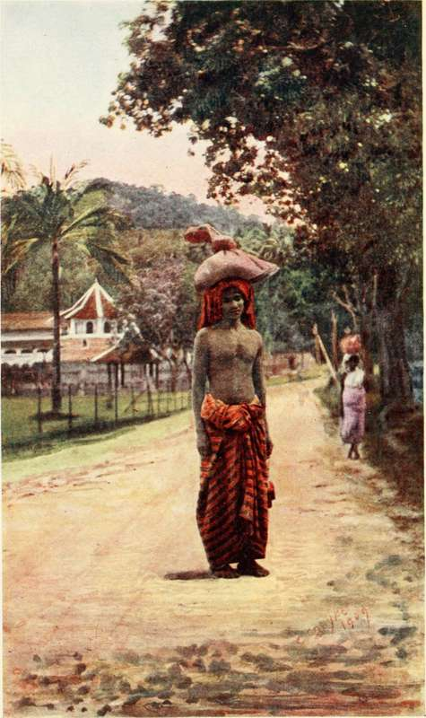

Chapter XII. The Hills
Description
This section is from the book "Ceylon", by Alfred Clark. Also available from Amazon: Ceylon.
Chapter XII. The Hills
The railway from Colombo to the tea-districts is one of the most beautiful in the world. For about forty miles it runs through level, cultivated country full of villages buried in palm-groves and coconut and cocoa estates. During the monsoon rains the country is flooded for miles owing to the rising of the rivers. From a station called Rambukana the line begins to ascend, and winds its way through beautiful valleys^ wild gorges and long tunnels, and along the rocky faces of precipices, till it reaches an elevation of six thousand two hundred feet, or over a mile, and then descends to about four thousand feet.
The scenery is magnificent all the way, views being obtained, at every turn of the winding track, of mountains soaring far above, such as Alagala, from the summit of which the last tyrant-King of Kandy was accustomed to hurl his victims, the Bible Rock, the Duke's Nose, and other peaks ; of great waterfalls flowing out of upland forests into cultivated valleys, and of shining rivers and silvery streams. Panoramic views also constantly open out of the low country far below—a mighty stretch of forests and palms and terraced paddy-fields, patched with dark cloud-shadows, away to the sea-line.
On clear nights the flash from the lighthouse at Colombo may often be seen from the hills. A story is told of a tea-planter who noticed one evening that the light, fifty miles or more away, did not begin to flash till half an hour after the proper time, though the delay had not been detected on the spot !
Owing to the great sweep the railway takes through the vast amphitheatre of the Uva Hills after passing through the Summit Tunnel, a passenger waiting at the terminus—Bandarawela—for the down train can see it coming an hour and twenty minutes before it arrives !
The first town of any importance reached by the railway is Kandy, one of the show-places of the world. It is seventeen hundred and sixty feet above sea-level, and lies in a lovely little valley, the bottom of which was converted by the last native King into a charming lake. There is an islet in the middle of it, on which, it is said, the King used to maroon any of his numerous wives who angered him, till they had seen the error of their ways !
The most interesting building in Kandy is the Dalada Maligawa, or Temple of the Sacred Tooth, a prominent picturesque pile close to the lake. It contains the oldest historical relic in the world—the Dalada, the reputed right canine tooth of Buddha, who lived over two thousand five hundred and thirty years ago. As it is about two and a half inches long, it is not unreasonable to have doubts as to whether it was ever fixed in any human head ! Yet it is venerated and practically worshipped by many millions of Buddhists. It is kept in a jewelled casket of great value, and is rarely exhibited. Once a year it is carried in procession round the town.
A Roadside Scene Near The Temple Of The Tooth.
This is during the Perahera, a festival which is held in August. The Sacred Tooth is placed in a sort of bell-shaped howdah, on a magnificent tusker elephant, almost hidden by gold embroidered trappings, and a great canopy is held over it by a number of men. Kandian chiefs, in their curious costumes and on foot, form a sort of guard of honour. A dozen or more caparisoned elephants, ridden by the lay head-men of the temple, follow with stately step, and bands of native musicians and troops of male dancers come between each. The procession is always at night, and the great elephants, the thousands of wildly excited spectators, the din of the tomtoms and wind instruments, the mad antics of the dancers, and the glare of the torches, combine to make a picture not to be forgotten. The priests themselves take no part in the proceedings.
There are several Buddhist colleges in Kandy, and yellow-robed, shaven-headed priests are an everyday sight. They belong to different orders, indicated by their dress, one party wearing their robes over both shoulders, another covering only one shoulder; some carrying huge fanlike shields, others shaving off their eyebrows as well as their hair and beards, and showing other peculiarities. All, however, take vows, and are allowed to possess only their robes, a fan, a water-strainer, and one or two other articles. They lead a lazy life, and may return to lay life at any time.
The sight of a Ratamahatmeya, or Kandian chief, in his official dress is an impressive one. Portliness being considered throughout the East as very desirable in a man of rank and position, a chief, if Nature has not been kind to him in this respect, calls in Art to his aid. He winds some thirty or forty yards of fine gold-threaded muslin round his waist till the desired presence is obtained. All this weight of loincloth is supported by a broad gold-embroidered belt, into which a short jewel-hilted sword of honour is thrust. A brightly coloured silk jacket with gigot sleeves covers the upper part of his body, and on his head he wears a curious pincushion hat. Round his neck are sold chains, with huge medals attached to them, given to his ancestors by former Governors, and on his fingers are heavy rings with huge rough-cut gems.
Four miles from Kandy, enclosed by a bend of the Mahaveli Ganga, the largest river in Ceylon, are the beautiful Peradeniya Botanic Gardens, where specimens of tropical and subtropical vegetation from all parts of the world are to be found. On the banks of the river are some clumps of giant bamboos, the stems of which are so big that sections of them can be used as buckets.
In the centre of the tea-districts is Newera Eliya, the well-known sanatorium. It is a beautiful tableland, six thousand two hundred feet above the sea, and consequently cool, and even frosty at night. Pedrotalagala, the highest mountain in Ceylon, eight thousand two hundred and ninety-six feet, rises over it, wooded to the summit. The swamps at the bottom of the valley were converted, some thirty years ago, into a pretty lake. Red-roofed bungalows peep out of wooded gardens, occupied chiefly by people from Colombo, who have escaped for a few weeks from the enervating heat of the low-country. One of the finest golf-links in the East has been laid out here.
On the eastern side of the mountain ranges are the Uva Patnas, which are great undulating downs about four thousand feet above sea-level. The climate here is quite different from the great tableland above. The latter, in the south-west monsoon, may be deluged in rain while the patnas below are bathed in sunshine. The wind on these downs is very violent at certain seasons, sufficient sometimes to overturn carts.
It was on these breezy, healthy downs that the great camp was formed in which many hundreds of Boers were kept prisoners during and after the South African War.
A pretty little town called Badulla, the centre of an important tea-district, lies in a valley to the east of the patnas, about two thousand feet above the sea. It is dominated by a striking mountain peak called Namanakuli. Other small towns, the centres of planting districts, are Matale, Gampola, and Nawala-pitiya.
In all the valleys are small Singhalese villages surrounded by terraced paddy-fields. There are also a tew hamlets, inhabited by a despised class called Rodiyas, a word which means simply "filth." The legend regarding them is that they were doomed by a King of Kandy to be for ever out-castes because one of their number, who was purveyor of meat to the palace, had caused human flesh to be served at the royal table in revenge for a slight offered to him.
Continue to: